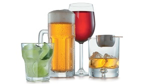
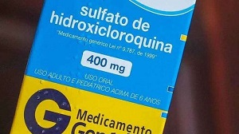
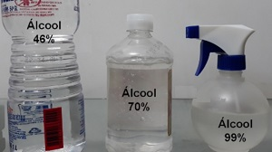
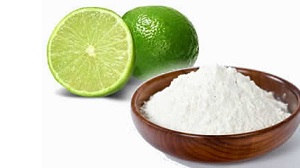
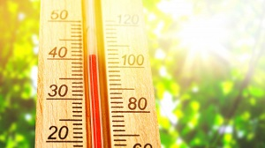
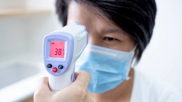

Fake News
A seguir estão listadas algumas das informações falsas sobre a COVID-19 que circulam em redes sociais e aplicativos de mensagens.
Chá de erva-doce para o tratamento do coronavírus
A mensagem que circula em redes sociais diz que a utilização do chá poderia prevenir o coronavírus pelo fato de a plantar conter a mesma substância do medicamento Tamiflu, usado para tratar o vírus da gripe H1N1.
A mensagem é falsa!!!! O chá de erva-doce não apresenta a substância citada e até o momento não existem vitaminas, alimentos, medicamentos ou substâncias que possam prevenir a infecção pelo coronavírus.
O consumo de bebidas alcoólicas protege contra a COVID-19
A mensagem é falsa!!!! Além de não ter nenhuma relação com a prevenção da doença, o consumo nocivo de álcool debilita o sistema imunológico e aumenta o risco de danos à saúde.

Hidroxicloroquina é eficaz contra o coronavírus
A mensagem é falsa!!!! Estudos recentes mostram que não há eficácia na utilização de cloroquina e hidroxicloroquina no combate ou na prevenção à COVID-19. Os profissionais de saúde ainda alertam para o perigo da automedição e salientam que a utilização da cloroquina ou hidroxicloroquina sem prescrição e acompanhamento médico, pode trazer danos à saúde e efeitos colaterais graves. Dentre os efeitos colaterais estão arritmias cardíacas graves e que podem ser fatais, danos à retina, cegueira e problemas hepáticos.

Pode-se usar qualquer tipo de álcool e com qualquer concentração na pele para a prevenção
A mensagem é falsa!!! O álcool etílico está entre os antissépticos mais seguros, não só pela sua baixíssima toxicidade, mas também pelo seu efeito microbicida rápido e de fácil aplicação. O álcool etílico, seja em gel ou líquido, tem ação germicida e capacidade para desestabilizar os vírus e as bactérias. Para essa finalidade, o grau alcoólico (ou concentração) recomendado é 70 %.
Quando se utiliza o álcool com concentração de 99,6º, por exemplo, ele evapora rapidamente e não consegue penetrar o interior da célula e, portanto, não mata os microrganismos.
O álcool 46º, que tem 54% de água, não serve para matar vírus, fungos e bactérias.
O álcool 70% possui o melhor efeito bactericida porque a água facilita a entrada do álcool na bactéria e também retarda a evaporação, permitindo maior tempo de contato.

Água fervida com alho serve como tratamento para o coronavírus
A mensagem é falsa!!!! Até o momento não existem vitaminas, chás, alimentos, medicamentos ou substâncias que possam prevenir ou combater a infecção pelo coronavírus.
Gargarejar com água morna ou salgada evita que o vírus vá para os pulmões
A mensagem é falsa!!!! Água morna ou salgada não evita que o vírus atinja os pulmões. Até o momento não existem vitaminas, chás, alimentos, medicamentos ou substâncias que possam prevenir ou combater a infecção pelo coronavírus.
Vitamina C previne o Coronavírus
A mensagem é falsa!!!! Vitamina C, assim como todas as outras, tem a função de fortalecer o organismo, mas não previne nenhum tipo de doença. Até o momento não existem vitaminas, chás, alimentos, medicamentos ou substâncias que possam prevenir ou combater a infecção pelo coronavírus.
Bebidas quentes ou alcóolicas matam o Coronavírus
A mensagem é falsa!!!! Até o momento não existem vitaminas, chás, alimentos, medicamentos ou substâncias que possam prevenir ou combater a infecção pelo coronavírus.
Alimentos alcalinos combatem a COVID-19
A mensagem é falsa!!!! Até o momento não existem vitaminas, chás, alimentos, medicamentos ou substâncias que possam prevenir ou combater a infecção pelo coronavírus.

Chá de limão com bicarbonato de sódio
A mensagem é falsa!!!! Até o momento não existem vitaminas, chás, alimentos, medicamentos ou substâncias que possam prevenir ou combater a infecção pelo coronavírus.

Calor do Brasil mata coronavírus
A mensagem é falsa!!!! Climas úmidos e quentes não tem influência para interromper a disseminação do novo coronavírus.

Termômetro digital na testa lança um raio destruidor da glândula pineal
A mensagem é falsa!!!! Os termômetros digitais têm a função apenas de captar os comprimentos de onda infravermelhos naturais que são emitidas pelo corpo humano, e não de enviá-los. O diretor de neurorradiologia da Universidade Johns Hopkins, Dr. Harris Sair, explica que a glândula pineal não está localizada próxima à testa. Ela se encontra a vários centímetros do tecido cerebral, isto é, nas áreas mais profundas do cérebro. Isso quer dizer que, mesmo que os termômetros infravermelhos pudessem fazer mal à saúde (o que não é verdade), jamais poderiam alcançá-la, uma vez que estes aparelhos são fabricados para captar apenas temperaturas da superfície da pele.
